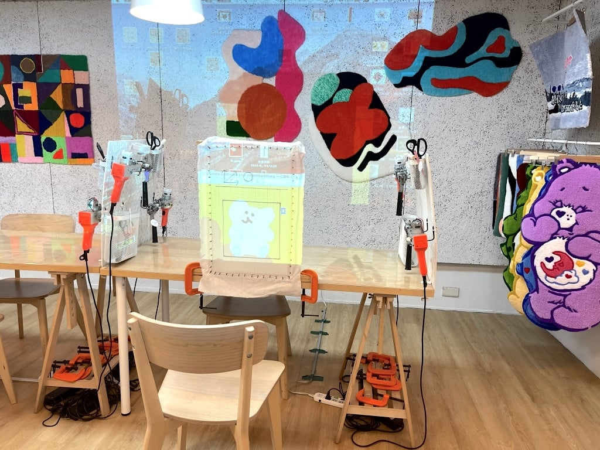
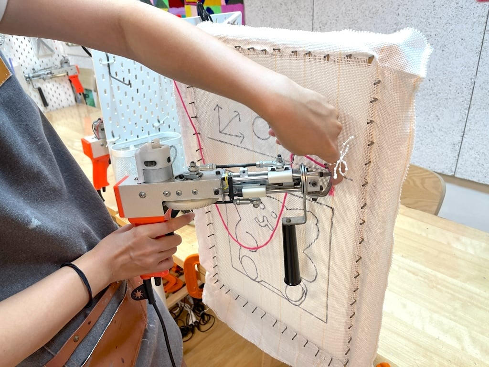

The Story Behind the Fluff
Kenali lebih dalam bagaimana kami bekerja.
1. Our Philosophy
Di DayEn Tuft, kami percaya bahwa karpet bukan sekadar alas kaki, melainkan karya seni yang bisa dipeluk. Filosofi kami adalah "Make it Personal".
Kami memulai perjalanan ini di garasi kecil pada tahun 2025, hanya dengan satu *tufting gun* dan mimpi besar. Kini, kami telah mengirimkan ribuan kebahagiaan empuk ke seluruh penjuru negeri. Kami memastikan setiap benang yang ditembakkan memiliki presisi dan kasih sayang.

2. The Tufting Process
Bagaimana karpet kustom Anda dibuat?
- 🎨 Sketching: Menggambar desain Anda ke kain kanvas (Monk's cloth).
- 🔫 Tufting: Menembakkan benang menggunakan *Tufting Gun* kecepatan tinggi.
- 🧴 Gluing: Melapisi bagian belakang dengan lem latex agar benang kuat.
- ✂️ Shaving & Carving: Mencukur bulu agar rata dan memahat detail (3D effect) agar desain terlihat tajam (pop-up).

3. Premium Materials Only
Kami tidak menggunakan benang sembarangan. DayEn Tuft menggunakan:

🧶 Milk Cotton
Sangat lembut, cocok untuk bayi & kulit sensitif.
🐑 New Zealand Wool
Tahan lama, mewah, dan ramah lingkungan.